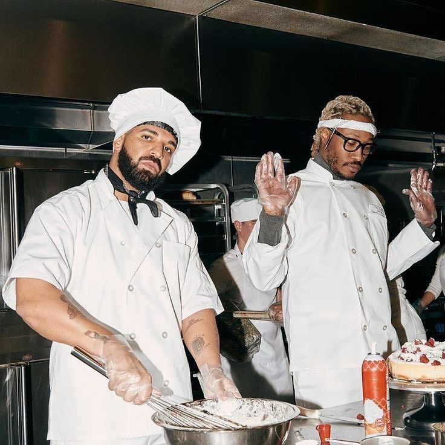

What is NOCTA

¿Qué es NOCTA?
Es una línea de ropa y calzado que fusiona el estilo personal de Drake con un enfoque en diseño moderno, calidad premium y detalles inspirados en la cultura urbana y nocturna.
¿Quién es Drake?
Es uno de los artistas más exitosos y populares del hip-hop y R&B contemporáneo, con una carrera musical que ha incluido múltiples éxitos, álbumes número uno y récords Guinness.

¿Por qué NOCTA?
Representa la inspiración nocturna , el momento en el que muchas ideas creativas cobran vida, especialmente en la cultura urbana y entre quienes están activos de noche.